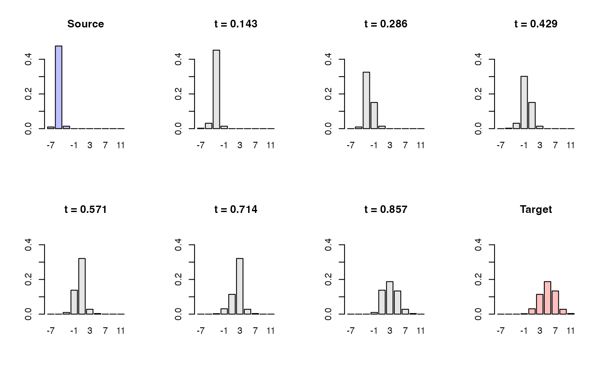

Interpolation between Histograms
histinterp.RdGiven two histograms represented as "histogram" S3 objects with
identical breaks, compute interpolated histograms along the 2-Wasserstein
geodesic connecting them. In 1D, this is achieved by linear interpolation
of quantile functions (displacement interpolation).
Arguments
- hist1
a histogram (
"histogram"object).- hist2
another histogram with the same
breaksashist1.- t
a scalar or numeric vector in \([0,1]\) specifying interpolation times.
t = 0returnshist1,t = 1returnshist2.- L
number of quantile levels used to approximate the geodesic (default: 2000). Larger
Lgives a more accurate approximation at increased computational cost.
Value
If length(t) == 1, a single "histogram" object representing the
interpolated distribution at time t.
If length(t) > 1, a length-length(t) list of "histogram"
objects.
Examples
# \donttest{
#----------------------------------------------------------------------
# Interpolating Two Gaussians
#
# The source histogram is created from N(-5,1/4).
# The target histogram is created from N(+5,4)
#----------------------------------------------------------------------
# SETTING
set.seed(123)
x_source = rnorm(1000, mean=-5, sd=1/2)
x_target = rnorm(1000, mean=+5, sd=2)
# BUILD HISTOGRAMS WITH COMMON BREAKS
bk = seq(from=-8, to=12, by=2)
h1 = hist(x_source, breaks=bk, plot=FALSE)
h2 = hist(x_target, breaks=bk, plot=FALSE)
# INTERPOLATE WITH 5 GRID POINTS
h_path <- histinterp(h1, h2, t = seq(0, 1, length.out = 8))
# VISUALIZE
y_slim <- c(0, max(h1$density, h2$density)) # shared y-limit
xt <- round(h1$mids, 1) # x-ticks
opar <- par(no.readonly = TRUE)
par(mfrow = c(2,4), pty = "s")
for (i in 1:8){
if (i < 2){
barplot(h_path[[i]]$density, names.arg=xt, ylim=y_slim,
main="Source", col=rgb(0,0,1,1/4))
} else if (i > 7){
barplot(h_path[[i]]$density, names.arg=xt, ylim=y_slim,
main="Target", col=rgb(1,0,0,1/4))
} else {
barplot(h_path[[i]]$density, names.arg=xt, ylim=y_slim,
col="gray90", main=sprintf("t = %.3f", (i-1)/7))
}
}

par(opar)
# }